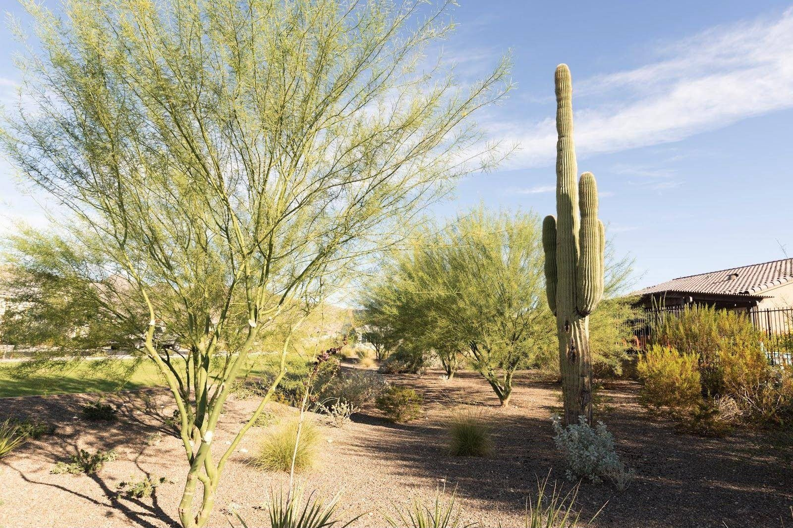
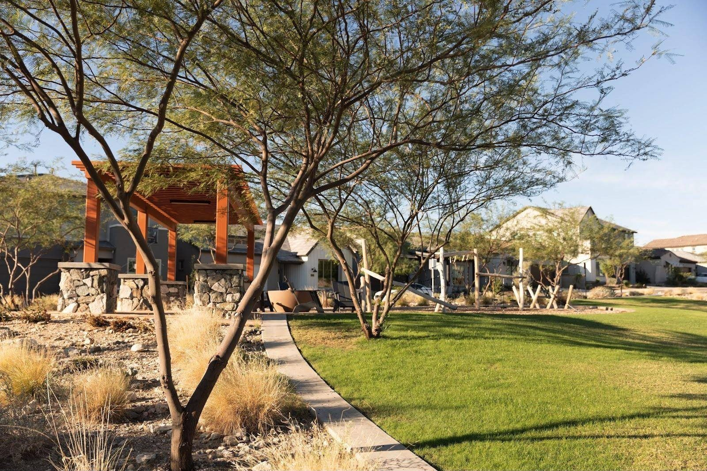
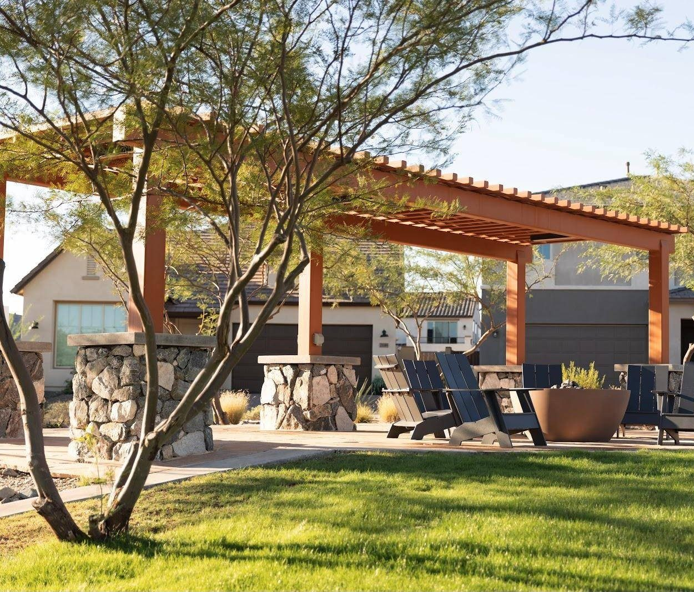
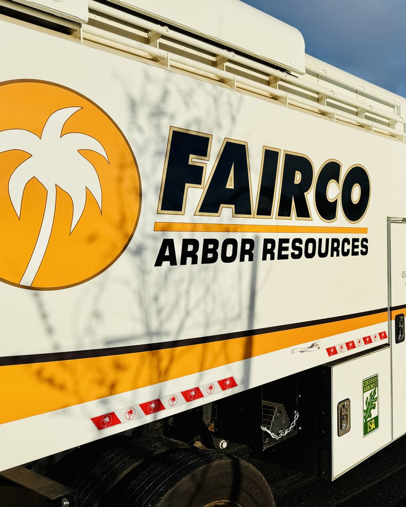
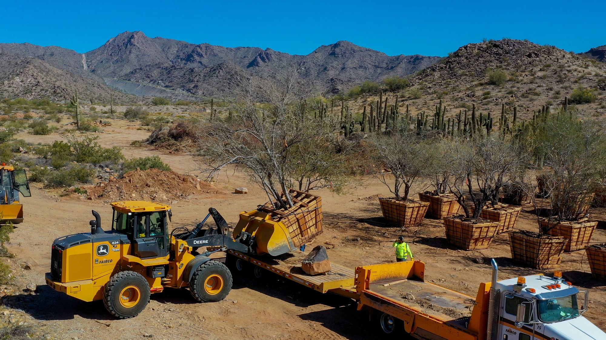

Featured
Plant Health CareOctober 2026
Why fall is planting season in the low desert
Cooler air and warm soil give new trees and shrubs a full season to root before summer heat arrives.
Read the articlePractical advice on desert landscapes from the crews and specialists who build and care for them.

Cooler air and warm soil give new trees and shrubs a full season to root before summer heat arrives.
Read the article
Running them on the same zone shortchanges one and overwaters the other.

A walk through the property after the storms can catch split limbs and leaning trees before they become a hazard.

What the credential means, and what to look for in whoever prunes your property's trees.

Saguaros, ironwoods and other natives can be boxed, held in a nursery and replanted in the finished community.
One email when a new post goes up. Unsubscribe any time.
Tell us about the property. We'll walk it, tell you what we see, and put a plan and a number in writing.
Request a Proposal